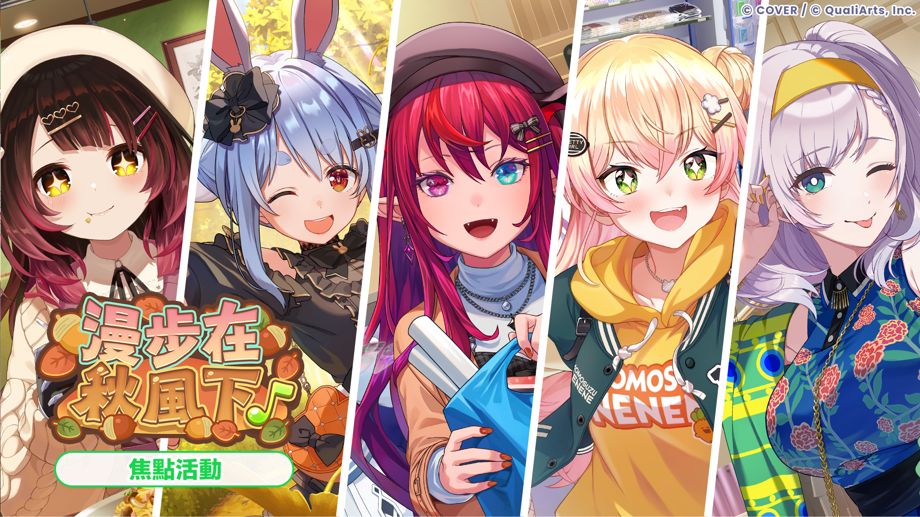
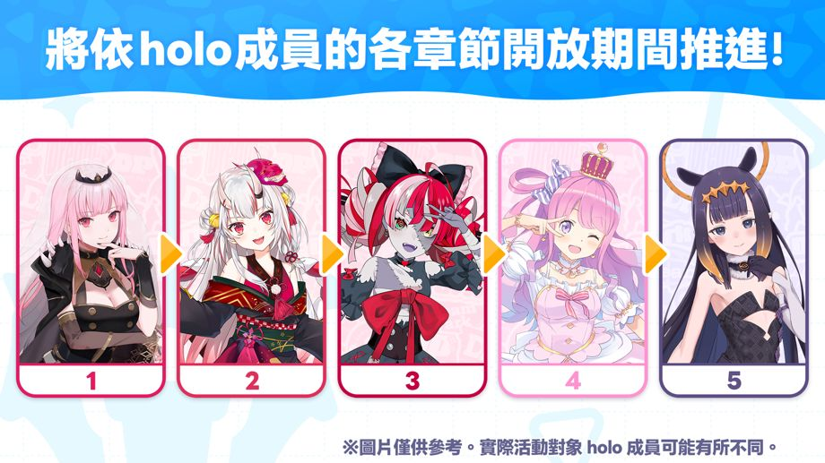
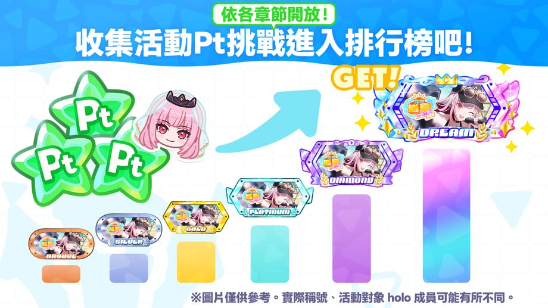
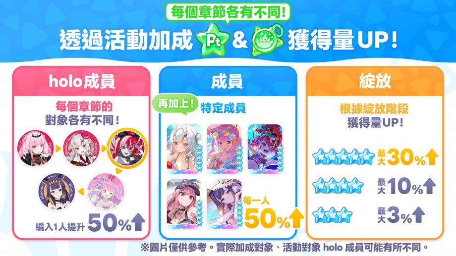
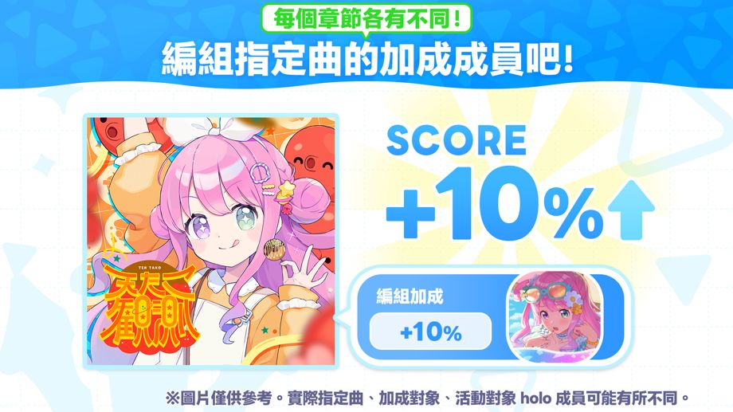
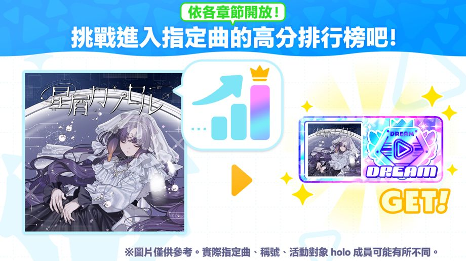

焦點活動「漫步在秋風下♪」開始！
◆參加條件
過關主線劇情1章4話「Mythical Connection」
◆活動期間
・活動期間
2026-11-14 20:00:00,2026-11-24 19:59:59
・章節1：蘿蔔子
2026-11-14 20:00:00,2026-11-16 19:59:59
・章節2：兔田佩克拉
2026-11-16 20:00:00,2026-11-18 19:59:59
・章節3：IRyS
2026-11-18 20:00:00,2026-11-20 19:59:59
・章節4：桃鈴音音
2026-11-20 20:00:00,2026-11-22 19:59:59
・章節5：Pavolia Reine
2026-11-22 20:00:00,2026-11-24 19:59:59
◆結果公布期間
章節1：2026-11-17 12:00:00 ～
章節2：2026-11-19 12:00:00 ～
章節3：2026-11-21 12:00:00 ～
章節4：2026-11-23 12:00:00 ～
章節5：2026-11-25 12:00:00 ～
全章節的結果公布期間統一於2026-11-30 19:59:59結束。
◆排名獎勵發放期間
2026-11-25 12:00:00,2026-11-30 19:59:59
◆活動徽章兌換期限
2026-11-30 19:59:59
活動說明

焦點活動將依各holo成員的專屬章節分別進行。
於各章節開放期間內，可透過遊玩Live與小遊戲獲得活動Pt與活動徽章。
收集各章節的活動Pt，即可觀賞專屬劇情。
各章節的活動徽章，亦可在兌換所兌換活動回憶卡等道具。
◆活動回憶卡
・章節1：蘿蔔子

・章節2：兔田佩克拉

・章節3：IRyS

・章節4：桃鈴音音

・章節5：Pavolia Reine
活動Pt排行榜

各章節的活動Pt排行榜將依活動期間內累積獲得的活動Pt進行排名。
在排行榜中取得名次，即可獲得活動限定稱號等獎勵。
※請依序點選［活動］→［排行榜］→［活動Pt排行榜］查看詳情。
活動獲得加成

焦點活動各章節的活動加成指定成員各有不同。
活動加成可提升遊玩Live獲得的活動Pt與活動徽章數量。
Live的獲得加成，分「成員加成」「holo成員加成」「綻放加成」3種類型。
・成員加成：編入指定成員挑戰Live，即可提升獲得量
・holo成員加成：編入指定holo成員挑戰Live，即可提升獲得量
・綻放加成：挑戰Live時的獲得量，將依編入成員的綻放階段提升
活動加成亦可提升遊玩小遊戲獲得的活動Pt與活動徽章數量。
小遊戲的獲得加成，分「小遊戲加成」「成員加成」2種類型。
・小遊戲加成：挑戰指定的小遊戲，即可提升獲得量
・成員加成：持有指定成員，即可提升獲得量
◆加成指定holo成員
章節1：蘿蔔子
章節2：兔田佩克拉
章節3：IRyS
章節4：桃鈴音音
章節5：Pavolia Reine
◆加成指定成員（全章節通用）
・5★ 與規格頂級的我在紅葉中的約會 蘿蔔子
・5★ 精心打扮，踏著輕快步伐出遊 兔田佩克拉
・5★ 讓希望在手中開花結果♪ IRyS
・5★ 沐浴在維他命色的落葉下 桃鈴音音
・5★ 微風吹拂♪邁向銀杏大道的盡頭 Pavolia Reine
◆加成指定小遊戲（全章節通用）
・撲克屋！
※請依序點選［活動］→［活動加成］查看詳情。
活動分數加成

活動加成含分數加成效果。編入加成指定成員挑戰活動指定曲，即可提升期間限定分數。
每首活動指定曲的分數加成指定成員各有不同。
每個章節的活動指定曲各有不同。
◆活動指定曲
章節1：slight fever
章節2：PEKORISER
章節3：Burning hope
章節4：Dear You, A Love Song Just for You!
章節5：Halulu
※請依序點選［活動］→［活動加成］查看詳情。
高分排行榜

各章節的高分排行榜將依各活動指定曲的期間限定分數進行競賽排名。
在排行榜中取得名次，即可獲得活動限定稱號。
※活動指定曲的活動期間限定分數與一般分數將各別儲存。
※請依序點選［活動］→［排行榜］→［高分排行榜］查看詳情。
注意事項
・於本次活動中獲得的活動Pt與活動徽章，無法沿用至下次活動。
・超過兌換期限的活動徽章將無法使用，請務必留意。
・排名獎勵將於排名獎勵發放期間內發放。請登入遊戲，依序點選［樂園］→［選單圖示］→［禮物盒］領取獎勵。
・於排名獎勵發放期間內未登入遊戲，仍可於期間結束後前往禮物盒領取獎勵。
・於排名獎勵發放期間結束後，尚未領取的達成任務獎勵，可依序點選［樂園］→［選單圖示］→［禮物盒］領取。
・本次活動兌換所可兌換的活動回憶卡，將有可能再次登場。
・結果公布期間結束後，可依序點選［影廳］→［Holo成員劇情］→［各holo成員的Holo成員劇情］查看活動劇情。
・受通訊狀況等因素影響，開始及結束時間可能會出現1秒上下的誤差。
・活動期間與內容，可能在未經預告的情況下變更。
・請依序點選［樂園］→［活動］查看本次活動詳情。